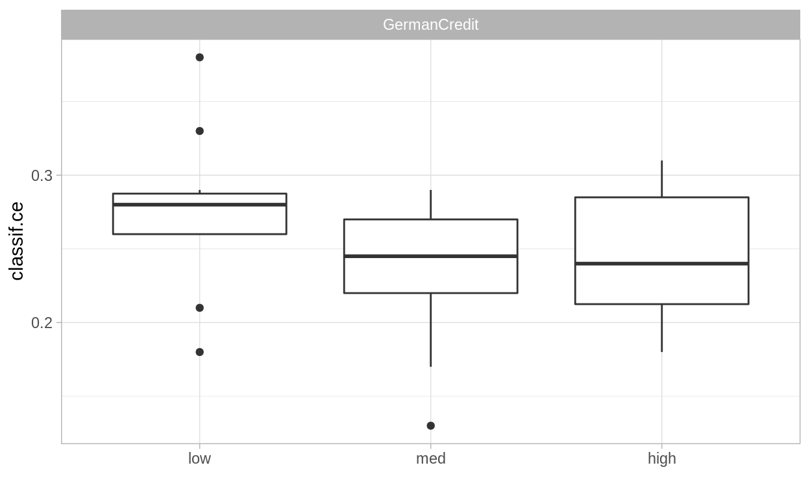

Intro
This is the first part in a serial of tutorials. The other parts of this series can be found here:
We will walk through this tutorial interactively. The text is kept short to be followed in real time.
Prerequisites
Ensure all packages used in this tutorial are installed. This includes packages from the mlr3 family, as well as other packages for data handling, cleaning and visualization which we are going to use (DataExplorer, data.table, ggplot2, rchallenge, and skimr).
Then, load the main packages we are going to use:
Machine Learning Use Case: German Credit Data
The German credit data was originally donated in 1994 by Prof.Dr.Hans Hoffman of the University of Hamburg. A description can be found at the UCI repository. The goal is to classify people by their credit risk (good or bad) using 20 personal, demographic and financial features:
| Feature Name | Description |
|---|---|
| age | age in years |
| amount | amount asked by applicant |
| credit_history | past credit history of applicant at this bank |
| duration | duration of the credit in months |
| employment_duration | present employment since |
| foreign_worker | is applicant foreign worker? |
| housing | type of apartment rented, owned, for free / no payment |
| installment_rate | installment rate in percentage of disposable income |
| job | current job information |
| number_credits | number of existing credits at this bank |
| other_debtors | other debtors/guarantors present? |
| other_installment_plans | other installment plans the applicant is paying |
| people_liable | number of people being liable to provide maintenance |
| personal_status_sex | combination of sex and personal status of applicant |
| present_residence | present residence since |
| property | properties that applicant has |
| purpose | reason customer is applying for a loan |
| savings | savings accounts/bonds at this bank |
| status | status/balance of checking account at this bank |
| telephone | is there any telephone registered for this customer? |
Importing the Data
The dataset we are going to use is a transformed version of this German credit dataset, as provided by the rchallenge package (this transformed dataset was proposed by Ulrike Grmping, with factors instead of dummy variables and corrected features):
data("german", package = "rchallenge")
First, well do a thorough investigation of the dataset.
Exploring the Data
We can get a quick overview of our dataset using Rs summary function:
dim(german)
[1] 1000 21str(german)
'data.frame': 1000 obs. of 21 variables:
$ status : Factor w/ 4 levels "no checking account",..: 1 2 4 1 1 4 4 2 4 2 ...
$ duration : int 6 48 12 42 24 36 24 36 12 30 ...
$ credit_history : Factor w/ 5 levels "delay in paying off in the past",..: 5 3 5 3 4 3 3 3 3 5 ...
$ purpose : Factor w/ 11 levels "others","car (new)",..: 4 4 7 3 1 7 3 2 4 1 ...
$ amount : int 1169 5951 2096 7882 4870 9055 2835 6948 3059 5234 ...
$ savings : Factor w/ 5 levels "unknown/no savings account",..: 5 1 1 1 1 5 3 1 4 1 ...
$ employment_duration : Factor w/ 5 levels "unemployed","< 1 yr",..: 5 3 4 4 3 3 5 3 4 1 ...
$ installment_rate : Ord.factor w/ 4 levels ">= 35"<"25 <= ... < 35"<..: 4 2 2 2 3 2 3 2 2 4 ...
$ personal_status_sex : Factor w/ 4 levels "male : divorced/separated",..: 3 2 3 3 3 3 3 3 1 4 ...
$ other_debtors : Factor w/ 3 levels "none","co-applicant",..: 1 1 1 3 1 1 1 1 1 1 ...
$ present_residence : Ord.factor w/ 4 levels "< 1 yr"<"1 <= ... < 4 yrs"<..: 4 2 3 4 4 4 4 2 4 2 ...
$ property : Factor w/ 4 levels "unknown / no property",..: 1 1 1 2 4 4 2 3 1 3 ...
$ age : int 67 22 49 45 53 35 53 35 61 28 ...
$ other_installment_plans: Factor w/ 3 levels "bank","stores",..: 3 3 3 3 3 3 3 3 3 3 ...
$ housing : Factor w/ 3 levels "for free","rent",..: 2 2 2 3 3 3 2 1 2 2 ...
$ number_credits : Ord.factor w/ 4 levels "1"<"2-3"<"4-5"<..: 2 1 1 1 2 1 1 1 1 2 ...
$ job : Factor w/ 4 levels "unemployed/unskilled - non-resident",..: 3 3 2 3 3 2 3 4 2 4 ...
$ people_liable : Factor w/ 2 levels "0 to 2","3 or more": 1 1 2 2 2 2 1 1 1 1 ...
$ telephone : Factor w/ 2 levels "no","yes (under customer name)": 2 1 1 1 1 2 1 2 1 1 ...
$ foreign_worker : Factor w/ 2 levels "no","yes": 1 1 1 1 1 1 1 1 1 1 ...
$ credit_risk : Factor w/ 2 levels "good","bad": 1 2 1 1 2 1 1 1 1 2 ...Our dataset has 1000 observations and 21 columns. The variable we want to predict is credit_risk (either good or bad), i.e., we aim to classify people by their credit risk.
We also recommend the packages skimr and DataExplorer as they create very well readable and understandable overviews:
skimr::skim(german)
| Name | german |
| Number of rows | 1000 |
| Number of columns | 21 |
| _______________________ | |
| Column type frequency: | |
| factor | 18 |
| numeric | 3 |
| ________________________ | |
| Group variables | None |
Variable type: factor
| skim_variable | n_missing | complete_rate | ordered | n_unique | top_counts |
|---|---|---|---|---|---|
| status | 0 | 1 | FALSE | 4 | : 394, no : 274, : 269, 0<=: 63 |
| credit_history | 0 | 1 | FALSE | 5 | no : 530, all: 293, exi: 88, cri: 49 |
| purpose | 0 | 1 | FALSE | 10 | fur: 280, oth: 234, car: 181, car: 103 |
| savings | 0 | 1 | FALSE | 5 | unk: 603, : 183, : 103, 100: 63 |
| employment_duration | 0 | 1 | FALSE | 5 | 1 <: 339, >= : 253, 4 <: 174, < 1: 172 |
| installment_rate | 0 | 1 | TRUE | 4 | < 2: 476, 25 : 231, 20 : 157, >= : 136 |
| personal_status_sex | 0 | 1 | FALSE | 4 | mal: 548, fem: 310, fem: 92, mal: 50 |
| other_debtors | 0 | 1 | FALSE | 3 | non: 907, gua: 52, co-: 41 |
| present_residence | 0 | 1 | TRUE | 4 | >= : 413, 1 <: 308, 4 <: 149, < 1: 130 |
| property | 0 | 1 | FALSE | 4 | bui: 332, unk: 282, car: 232, rea: 154 |
| other_installment_plans | 0 | 1 | FALSE | 3 | non: 814, ban: 139, sto: 47 |
| housing | 0 | 1 | FALSE | 3 | ren: 713, for: 179, own: 108 |
| number_credits | 0 | 1 | TRUE | 4 | 1: 633, 2-3: 333, 4-5: 28, >= : 6 |
| job | 0 | 1 | FALSE | 4 | ski: 630, uns: 200, man: 148, une: 22 |
| people_liable | 0 | 1 | FALSE | 2 | 0 t: 845, 3 o: 155 |
| telephone | 0 | 1 | FALSE | 2 | no: 596, yes: 404 |
| foreign_worker | 0 | 1 | FALSE | 2 | no: 963, yes: 37 |
| credit_risk | 0 | 1 | FALSE | 2 | goo: 700, bad: 300 |
Variable type: numeric
| skim_variable | n_missing | complete_rate | mean | sd | p0 | p25 | p50 | p75 | p100 | hist |
|---|---|---|---|---|---|---|---|---|---|---|
| duration | 0 | 1 | 20.90 | 12.06 | 4 | 12.0 | 18.0 | 24.00 | 72 | |
| amount | 0 | 1 | 3271.26 | 2822.74 | 250 | 1365.5 | 2319.5 | 3972.25 | 18424 | |
| age | 0 | 1 | 35.55 | 11.38 | 19 | 27.0 | 33.0 | 42.00 | 75 |
Prior to calling DataExplorer, we shorten the (very lengthy) factor levels of the german credit data set to get plots which nicely fit on the screen (no need to dig into this):
DataExplorer::plot_bar(german_short, nrow = 6, ncol = 3)

DataExplorer::plot_histogram(german_short, nrow = 1, ncol = 3)

DataExplorer::plot_boxplot(german_short, by = "credit_risk", nrow = 1, ncol = 3)

During this exploratory analysis meaningful discoveries could be:
- Skewed distributions
- Missing values
- Empty / rare factor variables
An explanatory analysis is crucial to get a feeling for your data. On the other hand the data can be validated this way. Non-plausible data can be investigated or outliers can be removed.
After feeling confident with the data, we want to do modeling now.
Modeling
Considering how we are going to tackle the problem of classifying the credit risk relates closely to what mlr3 entities we will use.
The typical questions that arise when building a machine learning workflow are:
- What is the problem we are trying to solve?
- What are appropriate learning algorithms?
- How do we evaluate good performance?
More systematically in mlr3 they can be expressed via five components:
- The
Taskdefinition. - The
Learnerdefinition. - The training.
- The prediction.
- The evaluation via one or multiple
Measures.
Task Definition
First, we are interested in the target which we want to model. Most supervised machine learning problems are regression or classification problems. However, note that other problems include unsupervised learning or time-to-event data (covered in mlr3proba).
Within mlr3, to distinguish between these problems, we define Tasks. If we want to solve a classification problem, we define a classification task TaskClassif. For a regression problem, we define a regression task TaskRegr.
In our case it is clearly our objective to model or predict the binary factor variable credit_risk. Thus, we define a TaskClassif:
task = TaskClassif$new("GermanCredit", german, target = "credit_risk")
Note that the German credit data is also given as an example task which ships with the mlr3 package. Thus, you actually dont need to construct it yourself, just call tsk("german_credit") to retrieve the object from the dictionary mlr_tasks.
Learner Definition
After having decided what should be modeled, we need to decide on how. This means we need to decide which learning algorithms, or Learners are appropriate. Using prior knowledge (e.g.knowing that it is a classification task or assuming that the classes are linearly separable) one ends up with one or more suitable Learners.
Many learners can be obtained via the mlr3learners package. Additionally, many learners are provided via the mlr3learners github organization. These two resources combined account for a large fraction of standard learning algorithms. As mlr3 usually only wraps learners from packages, it is even easy to create a formal Learner by yourself. You may find the section about extending mlr3 in the mlr3book very helpful. If you happen to write your own Learner in mlr3, we would be happy if you share it with the mlr3 community.
All available Learners (i.e.all which you have installed from mlr3, mlr3learners, the mlr3learners github organization, or self-written ones) are registered in the dictionary mlr_learners:
mlr_learners
<DictionaryLearner> with 28 stored values
Keys: classif.cv_glmnet, classif.debug, classif.featureless,
classif.glmnet, classif.kknn, classif.lda, classif.log_reg,
classif.multinom, classif.naive_bayes, classif.qda, classif.ranger,
classif.rpart, classif.svm, classif.xgboost, regr.cv_glmnet,
regr.featureless, regr.glmnet, regr.kknn, regr.km, regr.lm,
regr.ranger, regr.rpart, regr.svm, regr.xgboost, surv.cv_glmnet,
surv.glmnet, surv.ranger, surv.xgboostFor our problem, a suitable learner could be one of the following: Logistic regression, CART, random forest (or many more).
A learner can be initialized with the lrn() function and the name of the learner, e.g., lrn("classif.xxx"). Use ?mlr_learners_xxx to open the help page of a learner named xxx, or follow the link on the rendered overview page.
For example, a logistic regression can be initialized in the following manner (logistic regression uses Rs glm() function and is provided by the mlr3learners package):
library("mlr3learners")
learner_logreg = lrn("classif.log_reg")
print(learner_logreg)
<LearnerClassifLogReg:classif.log_reg>
* Model: -
* Parameters: list()
* Packages: stats
* Predict Type: response
* Feature types: logical, integer, numeric, character, factor, ordered
* Properties: twoclass, weightsTraining
Training is the procedure, where a model is fitted on the (training) data.
Logistic Regression
We start with the example of the logistic regression. However, you will immediately see that the procedure generalizes to any learner very easily.
An initialized learner can be trained on data using $train():
learner_logreg$train(task)
Typically, in machine learning, one does not use the full data which is available but a subset, the so-called training data.
To efficiently perform a split of the data one could do the following:
80 percent of the data is used for training. The remaining 20 percent are used for evaluation at a subsequent later point in time. train_set is an integer vector referring to the selected rows of the original dataset:
head(train_set)
[1] 192 887 86 784 801 673In mlr3 the training with a subset of the data can be declared by the additional argument row_ids = train_set:
learner_logreg$train(task, row_ids = train_set)
The fitted model can be accessed via:
learner_logreg$model
Call: stats::glm(formula = task$formula(), family = "binomial", data = task$data(),
model = FALSE)
Coefficients:
(Intercept)
1.6691468
age
-0.0162180
amount
0.0001059
credit_historycritical account/other credits elsewhere
0.0257514
credit_historyno credits taken/all credits paid back duly
-0.7236613
credit_historyexisting credits paid back duly till now
-0.9241113
credit_historyall credits at this bank paid back duly
-1.5551600
duration
0.0354770
employment_duration< 1 yr
-0.0090714
employment_duration1 <= ... < 4 yrs
-0.4401278
employment_duration4 <= ... < 7 yrs
-0.8562585
employment_duration>= 7 yrs
-0.3746667
foreign_workeryes
-1.2707370
housingrent
-0.3916570
housingown
-0.8025495
installment_rate.L
0.6950110
installment_rate.Q
-0.0160750
installment_rate.C
-0.2148696
jobunskilled - resident
0.7403678
jobskilled employee/official
0.6514147
jobmanager/self-empl/highly qualif. employee
0.7615486
number_credits.L
0.1128851
number_credits.Q
0.3386395
number_credits.C
0.6359221
other_debtorsco-applicant
0.4192059
other_debtorsguarantor
-1.0270985
other_installment_plansstores
-0.1717046
other_installment_plansnone
-0.5981560
people_liable3 or more
0.3628651
personal_status_sexfemale : non-single or male : single
-0.1619900
personal_status_sexmale : married/widowed
-0.8285951
personal_status_sexfemale : single
-0.5574866
present_residence.L
0.2113315
present_residence.Q
-0.5229247
present_residence.C
0.2983391
propertycar or other
0.1891866
propertybuilding soc. savings agr. / life insurance
0.0718602
propertyreal estate
1.1254990
purposecar (new)
-1.5970826
purposecar (used)
-0.4304394
purposefurniture/equipment
-0.5846949
purposeradio/television
0.6918507
purposedomestic appliances
-0.4275257
purposerepairs
-0.0015410
purposevacation
-1.2998326
purposeretraining
-0.5701959
purposebusiness
-1.3273149
savings... < 100 DM
-0.2931970
savings100 <= ... < 500 DM
-0.6003949
savings500 <= ... < 1000 DM
-1.7184754
savings... >= 1000 DM
-0.9217140
status... < 0 DM
-0.3182345
status0<= ... < 200 DM
-1.2038170
status... >= 200 DM / salary for at least 1 year
-1.7496752
telephoneyes (under customer name)
-0.3673033
Degrees of Freedom: 799 Total (i.e. Null); 745 Residual
Null Deviance: 993.7
Residual Deviance: 702.9 AIC: 812.9The stored object is a normal glm object and all its S3 methods work as expected:
class(learner_logreg$model)
[1] "glm" "lm" summary(learner_logreg$model)
Call:
stats::glm(formula = task$formula(), family = "binomial", data = task$data(),
model = FALSE)
Deviance Residuals:
Min 1Q Median 3Q Max
-2.4228 -0.6776 -0.3540 0.6724 2.7357
Coefficients:
Estimate Std. Error
(Intercept) 1.669e+00 1.229e+00
age -1.622e-02 1.075e-02
amount 1.059e-04 5.213e-05
credit_historycritical account/other credits elsewhere 2.575e-02 6.421e-01
credit_historyno credits taken/all credits paid back duly -7.237e-01 5.066e-01
credit_historyexisting credits paid back duly till now -9.241e-01 5.559e-01
credit_historyall credits at this bank paid back duly -1.555e+00 5.013e-01
duration 3.548e-02 1.086e-02
employment_duration< 1 yr -9.071e-03 4.945e-01
employment_duration1 <= ... < 4 yrs -4.401e-01 4.730e-01
employment_duration4 <= ... < 7 yrs -8.563e-01 5.107e-01
employment_duration>= 7 yrs -3.747e-01 4.728e-01
foreign_workeryes -1.271e+00 6.489e-01
housingrent -3.917e-01 2.691e-01
housingown -8.025e-01 5.443e-01
installment_rate.L 6.950e-01 2.491e-01
installment_rate.Q -1.607e-02 2.247e-01
installment_rate.C -2.149e-01 2.271e-01
jobunskilled - resident 7.404e-01 8.852e-01
jobskilled employee/official 6.514e-01 8.607e-01
jobmanager/self-empl/highly qualif. employee 7.615e-01 8.835e-01
number_credits.L 1.129e-01 7.677e-01
number_credits.Q 3.386e-01 6.795e-01
number_credits.C 6.359e-01 5.764e-01
other_debtorsco-applicant 4.192e-01 4.490e-01
other_debtorsguarantor -1.027e+00 4.654e-01
other_installment_plansstores -1.717e-01 4.622e-01
other_installment_plansnone -5.982e-01 2.729e-01
people_liable3 or more 3.629e-01 2.776e-01
personal_status_sexfemale : non-single or male : single -1.620e-01 4.411e-01
personal_status_sexmale : married/widowed -8.286e-01 4.347e-01
personal_status_sexfemale : single -5.575e-01 5.227e-01
present_residence.L 2.113e-01 2.417e-01
present_residence.Q -5.229e-01 2.292e-01
present_residence.C 2.983e-01 2.276e-01
propertycar or other 1.892e-01 2.907e-01
propertybuilding soc. savings agr. / life insurance 7.186e-02 2.713e-01
propertyreal estate 1.125e+00 4.843e-01
purposecar (new) -1.597e+00 4.333e-01
purposecar (used) -4.304e-01 2.994e-01
purposefurniture/equipment -5.847e-01 2.817e-01
purposeradio/television 6.919e-01 8.823e-01
purposedomestic appliances -4.275e-01 6.843e-01
purposerepairs -1.541e-03 4.871e-01
purposevacation -1.300e+00 1.241e+00
purposeretraining -5.702e-01 3.809e-01
purposebusiness -1.327e+00 8.467e-01
savings... < 100 DM -2.932e-01 3.240e-01
savings100 <= ... < 500 DM -6.004e-01 4.596e-01
savings500 <= ... < 1000 DM -1.718e+00 6.767e-01
savings... >= 1000 DM -9.217e-01 3.008e-01
status... < 0 DM -3.182e-01 2.495e-01
status0<= ... < 200 DM -1.204e+00 4.372e-01
status... >= 200 DM / salary for at least 1 year -1.750e+00 2.652e-01
telephoneyes (under customer name) -3.673e-01 2.353e-01
z value Pr(>|z|)
(Intercept) 1.358 0.174340
age -1.508 0.131467
amount 2.031 0.042295 *
credit_historycritical account/other credits elsewhere 0.040 0.968011
credit_historyno credits taken/all credits paid back duly -1.428 0.153172
credit_historyexisting credits paid back duly till now -1.662 0.096447 .
credit_historyall credits at this bank paid back duly -3.102 0.001920 **
duration 3.267 0.001088 **
employment_duration< 1 yr -0.018 0.985363
employment_duration1 <= ... < 4 yrs -0.931 0.352111
employment_duration4 <= ... < 7 yrs -1.677 0.093588 .
employment_duration>= 7 yrs -0.792 0.428076
foreign_workeryes -1.958 0.050204 .
housingrent -1.455 0.145567
housingown -1.474 0.140381
installment_rate.L 2.790 0.005275 **
installment_rate.Q -0.072 0.942979
installment_rate.C -0.946 0.344040
jobunskilled - resident 0.836 0.402925
jobskilled employee/official 0.757 0.449164
jobmanager/self-empl/highly qualif. employee 0.862 0.388730
number_credits.L 0.147 0.883091
number_credits.Q 0.498 0.618233
number_credits.C 1.103 0.269927
other_debtorsco-applicant 0.934 0.350458
other_debtorsguarantor -2.207 0.027324 *
other_installment_plansstores -0.371 0.710269
other_installment_plansnone -2.191 0.028418 *
people_liable3 or more 1.307 0.191235
personal_status_sexfemale : non-single or male : single -0.367 0.713460
personal_status_sexmale : married/widowed -1.906 0.056628 .
personal_status_sexfemale : single -1.067 0.286170
present_residence.L 0.874 0.381983
present_residence.Q -2.281 0.022544 *
present_residence.C 1.311 0.189916
propertycar or other 0.651 0.515160
propertybuilding soc. savings agr. / life insurance 0.265 0.791094
propertyreal estate 2.324 0.020140 *
purposecar (new) -3.686 0.000228 ***
purposecar (used) -1.437 0.150588
purposefurniture/equipment -2.076 0.037912 *
purposeradio/television 0.784 0.432939
purposedomestic appliances -0.625 0.532118
purposerepairs -0.003 0.997476
purposevacation -1.047 0.294888
purposeretraining -1.497 0.134422
purposebusiness -1.568 0.116967
savings... < 100 DM -0.905 0.365452
savings100 <= ... < 500 DM -1.306 0.191389
savings500 <= ... < 1000 DM -2.539 0.011106 *
savings... >= 1000 DM -3.064 0.002182 **
status... < 0 DM -1.275 0.202197
status0<= ... < 200 DM -2.753 0.005902 **
status... >= 200 DM / salary for at least 1 year -6.597 4.21e-11 ***
telephoneyes (under customer name) -1.561 0.118505
---
Signif. codes: 0 '***' 0.001 '**' 0.01 '*' 0.05 '.' 0.1 ' ' 1
(Dispersion parameter for binomial family taken to be 1)
Null deviance: 993.74 on 799 degrees of freedom
Residual deviance: 702.92 on 745 degrees of freedom
AIC: 812.92
Number of Fisher Scoring iterations: 5Random Forest
Just like the logistic regression, we could train a random forest instead. We use the fast implementation from the ranger package. For this, we first need to define the learner and then actually train it.
We now additionally supply the importance argument (importance = "permutation"). Doing so, we override the default and let the learner do feature importance determination based on permutation feature importance:
learner_rf = lrn("classif.ranger", importance = "permutation")
learner_rf$train(task, row_ids = train_set)
We can access the importance values using $importance():
learner_rf$importance()
status duration credit_history
0.0388697506 0.0208104546 0.0133260355
amount age property
0.0130547695 0.0066976547 0.0065973740
savings employment_duration other_installment_plans
0.0064645652 0.0049669821 0.0043701158
installment_rate other_debtors present_residence
0.0040680736 0.0038743649 0.0034065336
housing telephone purpose
0.0019102484 0.0015758861 0.0015000563
number_credits job people_liable
0.0012576237 0.0010075039 0.0003985482
foreign_worker personal_status_sex
0.0002345502 0.0002200277 In order to obtain a plot for the importance values, we convert the importance to a data.table and then process it with ggplot2:
importance = as.data.table(learner_rf$importance(), keep.rownames = TRUE)
colnames(importance) = c("Feature", "Importance")
ggplot(importance, aes(x = reorder(Feature, Importance), y = Importance)) +
geom_col() + coord_flip() + xlab("")
Prediction
Lets see what the models predict.
After training a model, the model can be used for prediction. Usually, prediction is the main purpose of machine learning models.
In our case, the model can be used to classify new credit applicants w.r.t. their associated credit risk (good vs.bad) on the basis of the features. Typically, machine learning models predict numeric values. In the regression case this is very natural. For classification, most models predict scores or probabilities. Based on these values, one can derive class predictions.
Predict Classes
First, we directly predict classes:
pred_logreg = learner_logreg$predict(task, row_ids = test_set)
pred_rf = learner_rf$predict(task, row_ids = test_set)
pred_logreg
<PredictionClassif> for 200 observations:
row_id truth response
6 good good
14 bad good
24 good good
---
995 good good
997 good good
1000 good goodpred_rf
<PredictionClassif> for 200 observations:
row_id truth response
6 good good
14 bad good
24 good good
---
995 good good
997 good bad
1000 good badThe $predict() method returns a Prediction object. It can be converted to a data.table if one wants to use it downstream.
We can also display the prediction results aggregated in a confusion matrix:
pred_logreg$confusion
truth
response good bad
good 130 31
bad 20 19pred_rf$confusion
truth
response good bad
good 132 36
bad 18 14Predict Probabilities
Most learners may not only predict a class variable (response), but also their degree of belief / uncertainty in a given response. Typically, we achieve this by setting the $predict_type slot of a Learner to "prob". Sometimes this needs to be done before the learner is trained. Alternatively, we can directly create the learner with this option: lrn("classif.log_reg", predict_type = "prob").
learner_logreg$predict_type = "prob"
learner_logreg$predict(task, row_ids = test_set)
<PredictionClassif> for 200 observations:
row_id truth response prob.good prob.bad
6 good good 0.7791016 0.22089840
14 bad good 0.6620356 0.33796442
24 good good 0.9513071 0.04869289
---
995 good good 0.9617661 0.03823388
997 good good 0.5904093 0.40959070
1000 good good 0.7925998 0.20740022Note that sometimes one needs to be cautious when dealing with the probability interpretation of the predictions.
Performance Evaluation
To measure the performance of a learner on new unseen data, we usually mimic the scenario of unseen data by splitting up the data into training and test set. The training set is used for training the learner, and the test set is only used for predicting and evaluating the performance of the trained learner. Numerous resampling methods (cross-validation, bootstrap) repeat the splitting process in different ways.
Within mlr3, we need to specify the resampling strategy using the rsmp() function:
<ResamplingHoldout> with 1 iterations
* Instantiated: FALSE
* Parameters: ratio=0.6667Here, we use holdout, a simple train-test split (with just one iteration). We use the resample() function to undertake the resampling calculation:
res = resample(task, learner = learner_logreg, resampling = resampling)
res
<ResampleResult> of 1 iterations
* Task: GermanCredit
* Learner: classif.log_reg
* Warnings: 0 in 0 iterations
* Errors: 0 in 0 iterationsThe default score of the measure is included in the $aggregate() slot:
res$aggregate()
classif.ce
0.2642643 The default measure in this scenario is the classification error. Lower is better.
We can easily run different resampling strategies, e.g.repeated holdout ("subsampling"), or cross validation. Most methods perform repeated train/predict cycles on different data subsets and aggregate the result (usually as the mean). Doing this manually would require us to write loops. mlr3 does the job for us:
resampling = rsmp("subsampling", repeats = 10)
rr = resample(task, learner = learner_logreg, resampling = resampling)
rr$aggregate()
classif.ce
0.2567568 Instead, we could also run cross-validation:
resampling = resampling = rsmp("cv", folds = 10)
rr = resample(task, learner = learner_logreg, resampling = resampling)
rr$aggregate()
classif.ce
0.253 mlr3 features scores for many more measures. Here, we apply mlr_measures_classif.fpr for the false positive rate, and mlr_measures_classif.fnr for the false negative rate. Multiple measures can be provided as a list of measures (which can directly be constructed via msrs():
# false positive rate
rr$aggregate(msr("classif.fpr"))
classif.fpr
0.5144825 # false positive rate and false negative
measures = msrs(c("classif.fpr", "classif.fnr"))
rr$aggregate(measures)
classif.fpr classif.fnr
0.5144825 0.1445804 There are a few more resampling methods, and quite a few more measures (implemented in mlr3measures). They are automatically registered in the respective dictionaries:
mlr_resamplings
<DictionaryResampling> with 8 stored values
Keys: bootstrap, custom, cv, holdout, insample, loo, repeated_cv,
subsamplingmlr_measures
<DictionaryMeasure> with 54 stored values
Keys: classif.acc, classif.auc, classif.bacc, classif.bbrier,
classif.ce, classif.costs, classif.dor, classif.fbeta, classif.fdr,
classif.fn, classif.fnr, classif.fomr, classif.fp, classif.fpr,
classif.logloss, classif.mbrier, classif.mcc, classif.npv,
classif.ppv, classif.prauc, classif.precision, classif.recall,
classif.sensitivity, classif.specificity, classif.tn, classif.tnr,
classif.tp, classif.tpr, debug, oob_error, regr.bias, regr.ktau,
regr.mae, regr.mape, regr.maxae, regr.medae, regr.medse, regr.mse,
regr.msle, regr.pbias, regr.rae, regr.rmse, regr.rmsle, regr.rrse,
regr.rse, regr.rsq, regr.sae, regr.smape, regr.srho, regr.sse,
selected_features, time_both, time_predict, time_trainTo get help on a resampling method, use ?mlr_resamplings_xxx, for a measure do ?mlr_measures_xxx. You can also browse the mlr3 reference online.
Note that some measures, for example AUC, require the prediction of probabilities.
Performance Comparison and Benchmarks
We could compare Learners by evaluating resample() for each of them manually. However, benchmark() automatically performs resampling evaluations for multiple learners and tasks. benchmark_grid() creates fully crossed designs: Multiple Learners for multiple Tasks are compared w.r.t. multiple Resamplings.
learners = lrns(c("classif.log_reg", "classif.ranger"), predict_type = "prob")
bm_design = benchmark_grid(
tasks = task,
learners = learners,
resamplings = rsmp("cv", folds = 10)
)
bmr = benchmark(bm_design)
Careful, large benchmarks may take a long time! This one should take less than a minute, however. In general, we want to use parallelization to speed things up on multi-core machines. For parallelization, mlr3 relies on the future package:
#future::plan("multiprocess") # uncomment for parallelization
In the benchmark we can compare different measures. Here, we look at the misclassification rate and the AUC:
measures = msrs(c("classif.ce", "classif.auc"))
performances = bmr$aggregate(measures)
performances[, c("learner_id", "classif.ce", "classif.auc")]
learner_id classif.ce classif.auc
1: classif.log_reg 0.244 0.7865278
2: classif.ranger 0.228 0.8101353We see that the two models perform very similarly.
Deviating from hyperparameters defaults
The previously shown techniques build the backbone of a mlr3-featured machine learning workflow. However, in most cases one would never proceed in the way we did. While many R packages have carefully selected default settings, they will not perform optimally in any scenario. Typically, we can select the values of such hyperparameters. The (hyper)parameters of a Learner can be accessed and set via its ParamSet $param_set:
learner_rf$param_set
<ParamSet>
id class lower upper
1: alpha ParamDbl -Inf Inf
2: always.split.variables ParamUty NA NA
3: class.weights ParamDbl -Inf Inf
4: holdout ParamLgl NA NA
5: importance ParamFct NA NA
6: keep.inbag ParamLgl NA NA
7: max.depth ParamInt -Inf Inf
8: min.node.size ParamInt 1 Inf
9: min.prop ParamDbl -Inf Inf
10: minprop ParamDbl -Inf Inf
11: mtry ParamInt 1 Inf
12: num.random.splits ParamInt 1 Inf
13: num.threads ParamInt 1 Inf
14: num.trees ParamInt 1 Inf
15: oob.error ParamLgl NA NA
16: predict.all ParamLgl NA NA
17: regularization.factor ParamUty NA NA
18: regularization.usedepth ParamLgl NA NA
19: replace ParamLgl NA NA
20: respect.unordered.factors ParamFct NA NA
21: sample.fraction ParamDbl 0 1
22: save.memory ParamLgl NA NA
23: scale.permutation.importance ParamLgl NA NA
24: se.method ParamFct NA NA
25: seed ParamInt -Inf Inf
26: split.select.weights ParamDbl 0 1
27: splitrule ParamFct NA NA
28: verbose ParamLgl NA NA
29: write.forest ParamLgl NA NA
id class lower upper
levels default parents
1: 0.5
2: <NoDefault[3]>
3:
4: TRUE,FALSE FALSE
5: none,impurity,impurity_corrected,permutation <NoDefault[3]>
6: TRUE,FALSE FALSE
7:
8: 1
9: 0.1
10: 0.1
11: <NoDefault[3]>
12: 1 splitrule
13: <NoDefault[3]>
14: 500
15: TRUE,FALSE TRUE
16: TRUE,FALSE FALSE
17: 1
18: TRUE,FALSE FALSE
19: TRUE,FALSE TRUE
20: ignore,order,partition ignore
21: <NoDefault[3]>
22: TRUE,FALSE FALSE
23: TRUE,FALSE FALSE importance
24: jack,infjack infjack
25:
26: <NoDefault[3]>
27: gini,extratrees gini
28: TRUE,FALSE TRUE
29: TRUE,FALSE TRUE
levels default parents
value
1:
2:
3:
4:
5: permutation
6:
7:
8:
9:
10:
11:
12:
13:
14:
15:
16:
17:
18:
19:
20:
21:
22:
23:
24:
25:
26:
27:
28:
29:
valuelearner_rf$param_set$values = list(verbose = FALSE)
We can choose parameters for our learners in two distinct manners. If we have prior knowledge on how the learner should be (hyper-)parameterized, the way to go would be manually entering the parameters in the parameter set. In most cases, however, we would want to tune the learner so that it can search good model configurations itself. For now, we only want to compare a few models.
To get an idea on which parameters can be manipulated, we can investigate the parameters of the original package version or look into the parameter set of the learner:
## ?ranger::ranger
as.data.table(learner_rf$param_set)[, .(id, class, lower, upper)]
id class lower upper
1: num.trees ParamInt 1 Inf
2: mtry ParamInt 1 Inf
3: importance ParamFct NA NA
4: write.forest ParamLgl NA NA
5: min.node.size ParamInt 1 Inf
6: replace ParamLgl NA NA
7: sample.fraction ParamDbl 0 1
8: class.weights ParamDbl -Inf Inf
9: splitrule ParamFct NA NA
10: num.random.splits ParamInt 1 Inf
11: split.select.weights ParamDbl 0 1
12: always.split.variables ParamUty NA NA
13: respect.unordered.factors ParamFct NA NA
14: scale.permutation.importance ParamLgl NA NA
15: keep.inbag ParamLgl NA NA
16: holdout ParamLgl NA NA
17: num.threads ParamInt 1 Inf
18: save.memory ParamLgl NA NA
19: verbose ParamLgl NA NA
20: oob.error ParamLgl NA NA
21: max.depth ParamInt -Inf Inf
22: alpha ParamDbl -Inf Inf
23: min.prop ParamDbl -Inf Inf
24: regularization.factor ParamUty NA NA
25: regularization.usedepth ParamLgl NA NA
26: seed ParamInt -Inf Inf
27: minprop ParamDbl -Inf Inf
28: predict.all ParamLgl NA NA
29: se.method ParamFct NA NA
id class lower upperFor the random forest two meaningful parameters which steer model complexity are num.trees and mtry. num.trees defaults to 500 and mtry to floor(sqrt(ncol(data) - 1)), in our case 4.
In the following we aim to train three different learners:
- The default random forest.
- A random forest with low
num.treesand lowmtry. - A random forest with high
num.treesand highmtry.
We will benchmark their performance on the German credit dataset. For this we construct the three learners and set the parameters accordingly:
Once the learners are defined, we can benchmark them:
learners = list(rf_low, rf_med, rf_high)
bm_design = benchmark_grid(
tasks = task,
learners = learners,
resamplings = rsmp("cv", folds = 10)
)
<BenchmarkResult> of 30 rows with 3 resampling runs
nr task_id learner_id resampling_id iters warnings errors
1 GermanCredit low cv 10 0 0
2 GermanCredit med cv 10 0 0
3 GermanCredit high cv 10 0 0We compare misclassification rate and AUC again:
measures = msrs(c("classif.ce", "classif.auc"))
performances = bmr$aggregate(measures)
performances[, .(learner_id, classif.ce, classif.auc)]
learner_id classif.ce classif.auc
1: low 0.275 0.7271936
2: med 0.235 0.7961501
3: high 0.246 0.7937442autoplot(bmr)

The low settings seem to underfit a bit, the high setting is comparable to the default setting med.
Outlook
This tutorial was a detailed introduction to machine learning workflows within mlr3. Having followed this tutorial you should be able to run your first models yourself. Next to that we spiked into performance evaluation and benchmarking. Furthermore, we showed how to customize learners.
The next parts of the tutorial will go more into depth into additional mlr3 topics:
Part II - Tuning introduces you to the mlr3tuning package
Part III - Pipelines introduces you to the mlr3pipelines package
Appendix
Tips
- What are the arguments of
tsk(),lrn(),rsmp(),msr()etc. again? \(\rightarrow\) Think about the corresponding dictionary:
mlr_tasks
<DictionaryTask> with 10 stored values
Keys: boston_housing, breast_cancer, german_credit, iris, mtcars, pima,
sonar, spam, wine, zoomlr_learners
<DictionaryLearner> with 28 stored values
Keys: classif.cv_glmnet, classif.debug, classif.featureless,
classif.glmnet, classif.kknn, classif.lda, classif.log_reg,
classif.multinom, classif.naive_bayes, classif.qda, classif.ranger,
classif.rpart, classif.svm, classif.xgboost, regr.cv_glmnet,
regr.featureless, regr.glmnet, regr.kknn, regr.km, regr.lm,
regr.ranger, regr.rpart, regr.svm, regr.xgboost, surv.cv_glmnet,
surv.glmnet, surv.ranger, surv.xgboostmlr_resamplings
<DictionaryResampling> with 8 stored values
Keys: bootstrap, custom, cv, holdout, insample, loo, repeated_cv,
subsamplingmlr_measures
<DictionaryMeasure> with 54 stored values
Keys: classif.acc, classif.auc, classif.bacc, classif.bbrier,
classif.ce, classif.costs, classif.dor, classif.fbeta, classif.fdr,
classif.fn, classif.fnr, classif.fomr, classif.fp, classif.fpr,
classif.logloss, classif.mbrier, classif.mcc, classif.npv,
classif.ppv, classif.prauc, classif.precision, classif.recall,
classif.sensitivity, classif.specificity, classif.tn, classif.tnr,
classif.tp, classif.tpr, debug, oob_error, regr.bias, regr.ktau,
regr.mae, regr.mape, regr.maxae, regr.medae, regr.medse, regr.mse,
regr.msle, regr.pbias, regr.rae, regr.rmse, regr.rmsle, regr.rrse,
regr.rse, regr.rsq, regr.sae, regr.smape, regr.srho, regr.sse,
selected_features, time_both, time_predict, time_train- What are the arguments of a
$new()constructor?- Check the corresponding help page.
- What are the possible slots and functions of an object?
- Writing
pred_rf$, and pressing <TAB> should work. Otherwise:
- Writing
names(pred_rf)
[1] ".__enclos_env__" "confusion" "prob" "response"
[5] "missing" "truth" "row_ids" "man"
[9] "predict_types" "task_properties" "task_type" "data"
[13] "set_threshold" "initialize" "clone" "score"
[17] "help" "print" "format" - How do I see the help file of an object?
- The documentation is organized by object classes
class(pred_rf)
[1] "PredictionClassif" "Prediction" "R6"